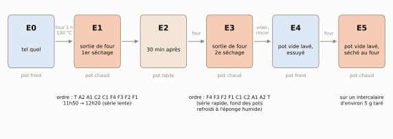

Données et code
Tout ce qui sert au papier est dans le dossier humidite-de-la-bauge/
du dépôt GitHub : les relevés bruts, le code qui refait les chiffres et
les figures, les photos. Texte, données, figures et photos sous licence
CC BY 4.0 ; code sous licence MIT. Les noms de fichiers et de colonnes
sont en français ; le dictionnaire des données les explique.
Les données
donnees/pesees.csv: les masses lues, une ligne par pot et par étape (E0 à E5), avec toutes les lectures répétées et le rang de pesée.donnees/prelevements.csv: une ligne par pot (mur, profondeur, lieu, outil de perçage).donnees/etapes.csv: les six étapes, leurs conditions de pesée et l’ordre de pesée des séries de sortie de four.donnees/isotherme_phung_2018.csv: les points publiés de deux sols de bauge de laboratoire (thèse de Phung, 2018), avec l’annexe d’où ils viennent : de quoi refaire la figure d’isotherme, pas une isotherme de ces murs.donnees/resultats_calcules.json: bruit de pesée, teneur en eau de chaque pot, humidité relative équivalente sur les deux sols publiés, bilan d’eau de la peau du cabanon.- Dictionnaire des colonnes :
donnees/README.md.
Le code
Python 3 avec matplotlib et numpy ; Pillow et pandoc pour la construction. Aucun fichier extérieur au sujet. Depuis la racine du dépôt :
python3 humidite-de-la-bauge/code/grandeurs.py # bruit, teneurs en eau, humidité relative équivalente
python3 humidite-de-la-bauge/code/figures_humidite.py # les cinq figures (français et anglais)
make construire # tout, plus le papier (.docx) et ce siteLes figures



Citer
Rémi Cura (2026). Humidité de la bauge. Dans : Rénover le bâti en terre crue : retours d’expérience, dépôt de données et de code, https://github.com/Remi-C/renovation-terre-crue. DOI : 10.5281/zenodo.24504812